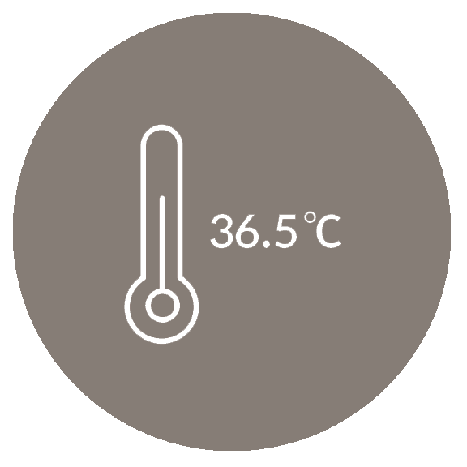
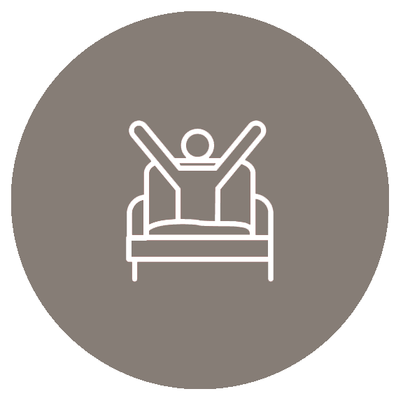
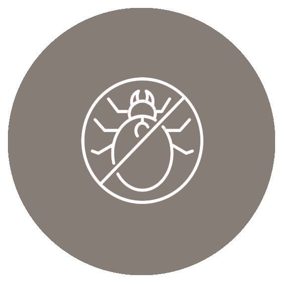

브랜드컨셉
베스트프로덕트
따뜻한사람들
WARM PEOPLE
Add Health To Your Bedroom
침실에 건강을 더하다
-
- 최고의 수면 충전
- 제한된 시간에 수면의 품질을 높이고 싶으신 분
-
- 올바른 수면자세
- 생활습관을 건강하게 바꾸고 싶으신 분
-
- 최적의 수면온도
- 소중한 사람에게 건강을 선물하고 싶으신 분
- 최고의 수면 충전
- 제한된 시간에 수면의 품질을 높이고 싶으신 분
- 올바른 수면자세
- 생활습관을 건강하게 바꾸고 싶으신 분
- 최적의 수면온도
- 소중한 사람에게 건강을 선물하고 싶으신 분
면역력
현대 건강의 고민의 정답은 "면역력"
-

- 체온과 면역력
- 체온을 올려주어 우리 몸의 면역력을
지킬 수 있습니다.
-

- 바른자세 통증완화
- 자세를 올바르게 잡아주어 척추건강을
지킬 수 있습니다.
-

- 위생적인 천연석재
- 곰팡이와 집 먼지 진드기 서식환경이
되지 않아 위생적입니다.
이런 분들께 추천 드립니다!
- 아토피, 건조함 등 피부가 예민하신분
- 건강한 면역력을 키우고 싶으신분
- 척추건강을 챙기고 싶으신분
- 건강함과 면역력을 전달하고 싶으신분
- 쾌적한 수면으로 하루를 밝게 시작하실분
- 수면 습관을 올바르게 바꾸고 싶으신분
회사소식
+- 모집
- 따뜻한 사람들신입, 경력직 영업 사원을 채용합니다. 서류접수는 22년11월28일~12월4일 까지입니다.
- 자세히 보기
- 행사
- 행사기간 중 방문하면 상세한 설명을 받아볼 수 있으며 구매 시 30만원 상당의 사은품을 전원 증정한다.
- 자세히 보기
- 제작지원
- 돌침대 브랜드 따뜻한 사람들이 KBS2 새 월화드라마'커튼콜'을 제작지원 한다고 밝혔다.
- 자세히 보기
- 기사
- 따뜻한 사람들은 게임업체 검은사막과 이색적인 콜라보 제품 '검은돌침대'를 출시했다고 5일 밝혔다.
- 자세히 보기
- 본사이전
- 2021년 12월 21일 본사를 이전하게 되었음을 안내드립니다. 지속적으로 관심과 성원을 부탁드립니다.
- 자세히 보기
- 수상
- 돌침대 브랜드 따뜻한 사람들이 '2022 올해의 브랜드 대상' 기능성 침대 16년 연속 1위를 달성!
- 자세히 보기
포토리뷰
+스타리뷰
+
안녕하세요~ 개그우먼 김지민입니다.
이번에 어머니와 함께 새로운 집으로 이사를 가게 되었습니다.
이전 집에서 생활을 하실 때에는 어머니께서 밤에 잠을 깊이 주무시지 못하셨습니다.
나이가 들수록 잠을 푹 자지 못하면 건강에 좋지 못하다는 말을 많이 들어
어머니의 건강을 위해 불면증에 좋다는 차와 음식을 사서 권해드렸는데요.
그럼에도 불구하고 불면증 증세가 좋아지지 않아 이사와 함께 ‘잠을 자는 공간’을 바꿔 보기로 하였습니다.
자세히보기
자세히보기
안녕하세요! 배우 정소민입니다.
부모님께서 집에 놓을 만한 소파를 필요로 하시던 참이었는데 제가 선물로 드리고 싶었어요. 따뜻한사람들 돌쇼파는 평소에는 푹신한 일반소파로 사용할 수 있지만, 거기에 더해 추운날에는 따뜻하게 온돌 기능을 이용할 수 있고, 여름에는 시원하게 쓸 수 있다는 점이 큰 장점이더라구요. 앉는 부분의 소파 시트를 걷어내면 돌소파가 되니까요. 돌소파라서 꺼짐현상도 없고 반영구적이라고 하던데, 조상들의 지혜를 담은 한옥같은 소파 같아요.
자세히보기
자세히보기